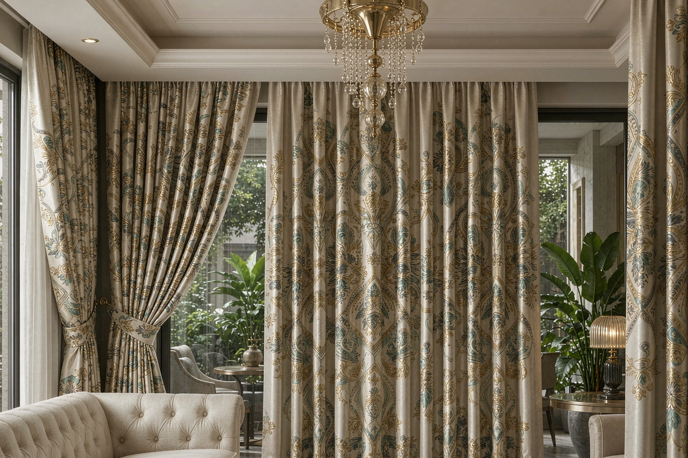
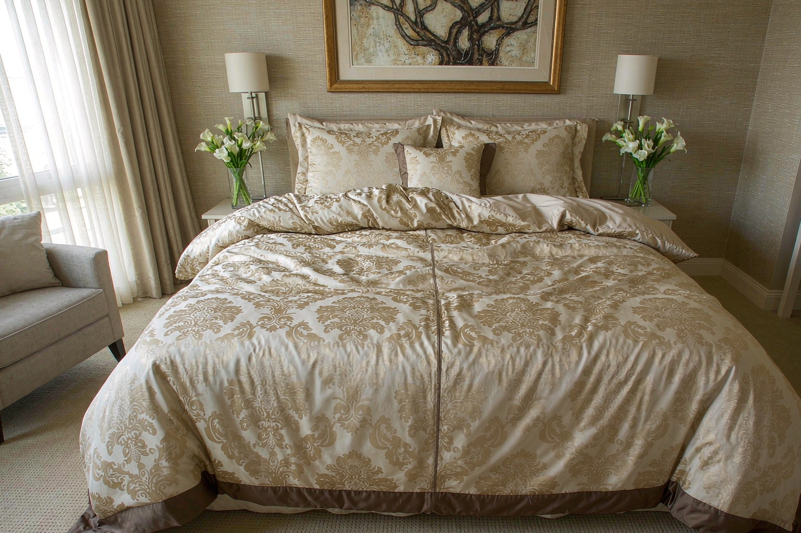
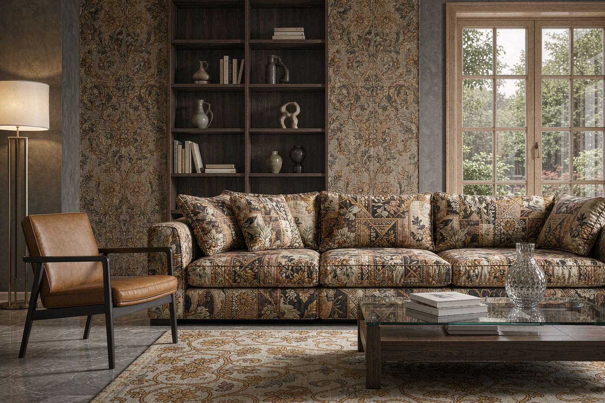
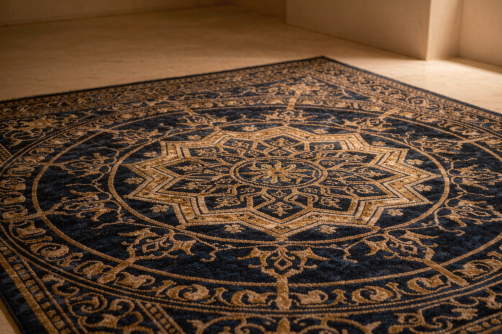
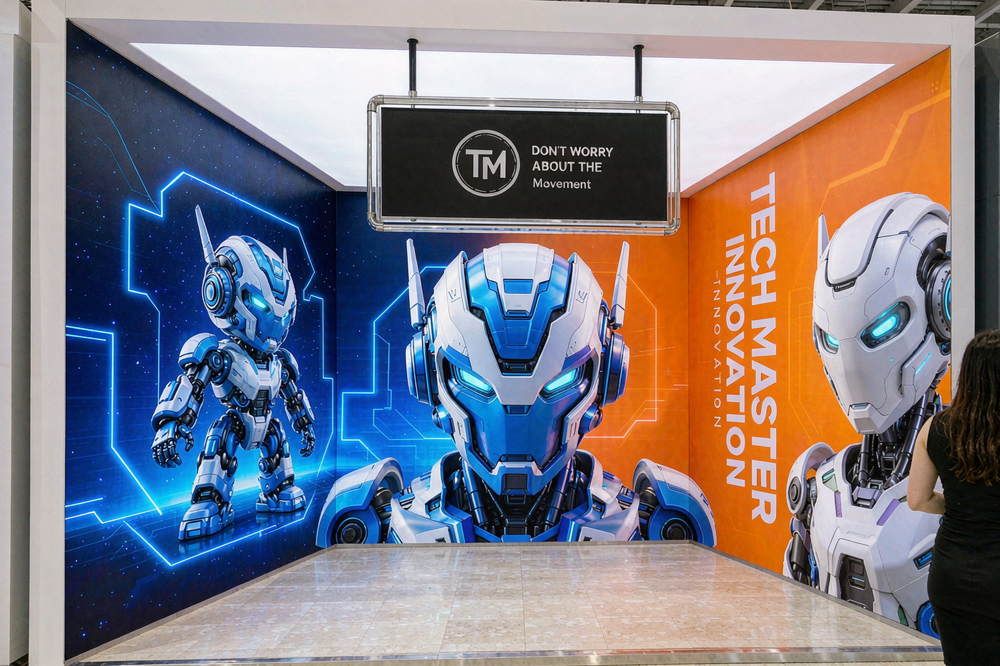
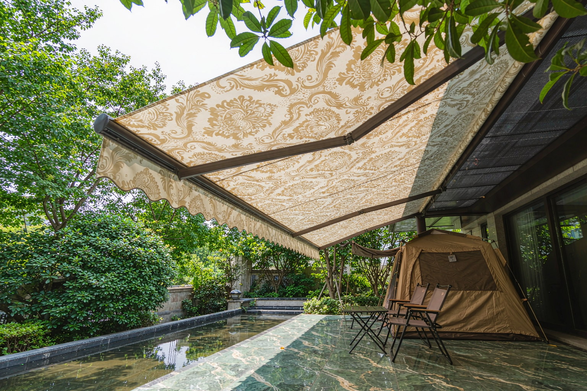
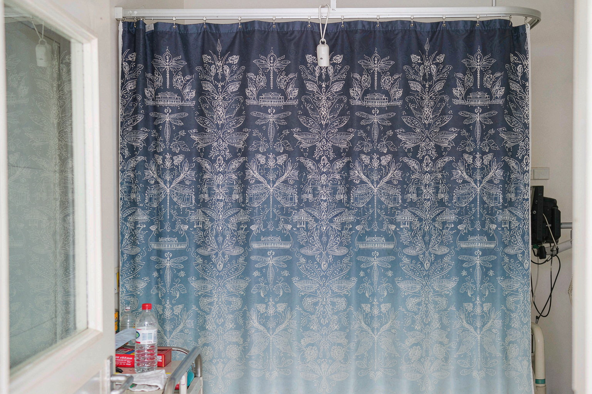

J.LINK TEXTILE is located in China Textile City, Keqiao, Shaoxing, specializing in wide-width digital printing OEM. From curtains, bedding and furnishing to carpet, advertising, outdoor and medical — full-substrate seamless customization, the preferred B2B OEM partner.
All seven sectors below use 2.2m+ seamless wide-width digital printing. Disperse / polyester / wide-width digital printing are matched per substrate. MOQ 1m, free sampling.

We provide blackout curtain printing, wide-width curtain digital printing, seamless single-piece curtain printing, French-pleat curtain customization, sheer curtain digital printing, Roman-shade printing, blind-fabric printing. Support for 2.8m curtain printing OEM, 3.2m ultra-wide curtain printing, large-format curtain printing — one piece, no seams, superior drape and pattern integrity versus joined solutions.

We handle wide-width bedding-set printing, seamless duvet-cover digital printing, large bedspread customization, brushed-set printing, wide-width sheet printing, home-textile large-format OEM, cotton home-textile fabric printing, supporting 2.2m+ bedding printing. Duvet covers and bedspreads output seamlessly — continuous pattern, no join marks, color fastness Grade 4+, Oeko-Tex compliant.

Covering wide-width sofa-fabric printing, seamless sofa-cover digital printing, seamless wallcovering customization, French wide tablecloth printing, cushion printing, placemat digital printing, bay-window cushion seamless printing, sofa-leather base wide printing. Wallcovering printed seamless in one piece; sofa covers, tablecloths and bay-window cushions customized seamlessly — continuous, uninterrupted patterns.

We provide wide-width wall-to-wall carpet printing, corridor carpet customization, commercial carpet large-format printing, doormat wide printing, large mat OEM, office carpet printing. Wall-to-wall and commercial carpets output seamlessly — patterns extend infinitely with no misaligned joins, ideal for hotels, offices and commercial spaces.

One-stop service for stage backdrop seamless printing, mall banner customization, wide-format banner digital printing, advertising flag & beach-flag printing, corporate flag & streamer printing, exhibition backdrop seamless printing, soft lightbox fabric wide printing, X-banner & pull-up stand graphics, car-wrap wide printing, advertising tent fabric printing, umbrella digital customization, water-fill flag wide printing, large-format banner printing. Roll-to-roll wide output — complete graphics, no seams, ideal for exhibitions, malls and outdoor launches.

We provide wide-width awning-fabric printing, camping-tent seamless customization, outdoor-chair fabric printing, shade-structure digital printing, large outdoor-tarpaulin printing, wide outdoor-fabric printing. Awnings and tents customized seamlessly — UV-resistant, vivid patterns, ideal for camping, gardens and commercial outdoor settings.

We handle wide-width hospital-cubicle-curtain printing, hospital-curtain digital customization, medical-fabric wide printing. Hospital curtains and public-space partition fabrics output seamlessly — continuous patterns, easy to clean, meeting medical and public institutions' eco and quality requirements.
The following requirements can be directed straight to our wide-width digital printing OEM line:
Seven sectors: curtain & window décor, bedding & home textile, home furnishing, carpet & mat, advertising & exhibition, outdoor shading, medical & public — plus universal 2.2m+ wide, 3.2m ultra-wide, seamless single-piece, large-format custom and roll-to-roll wide printing.
J.LINK TEXTILE offers MOQ 1 meter with free sampling, unlimited quantity per design. Trial orders, single-design restocking and color top-ups are all supported.
Up to 320CM, covering six standard widths 200/220/240/260/280/320CM, seamless single-piece — ideal for curtains, wallcoverings, carpets and banners.
Yes. Roll-to-roll wide printing suits banner fabric, car wrap, awning fabric, camping tents, hospital curtains and more. Disperse / polyester / wide-width digital printing are matched per substrate.
J.LINK TEXTILE supports 200-320CM full widths, seamless single-piece, MOQ 1m, free sampling. Send us your artwork and we'll produce a sample.
📞 Contact Mr. Zhang +86-177-6988-6009 for a quote